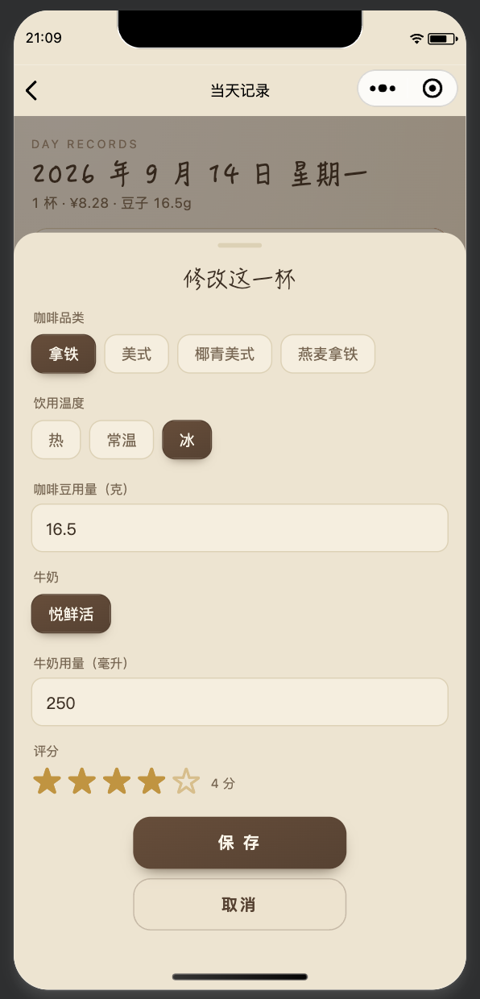
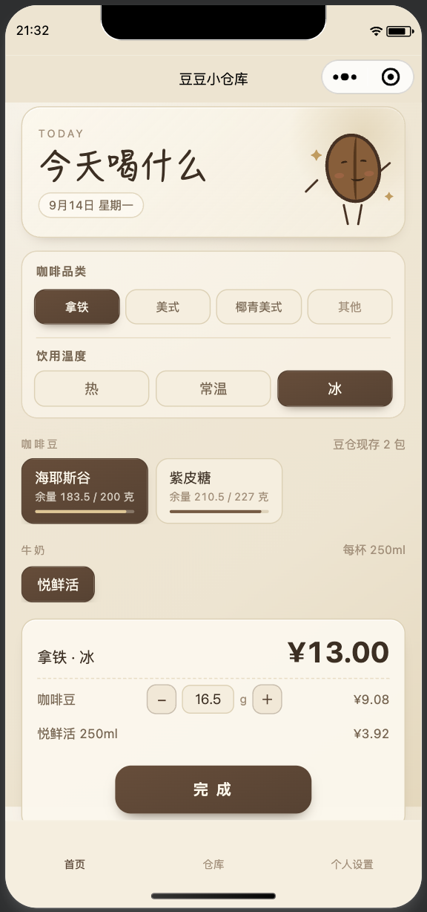
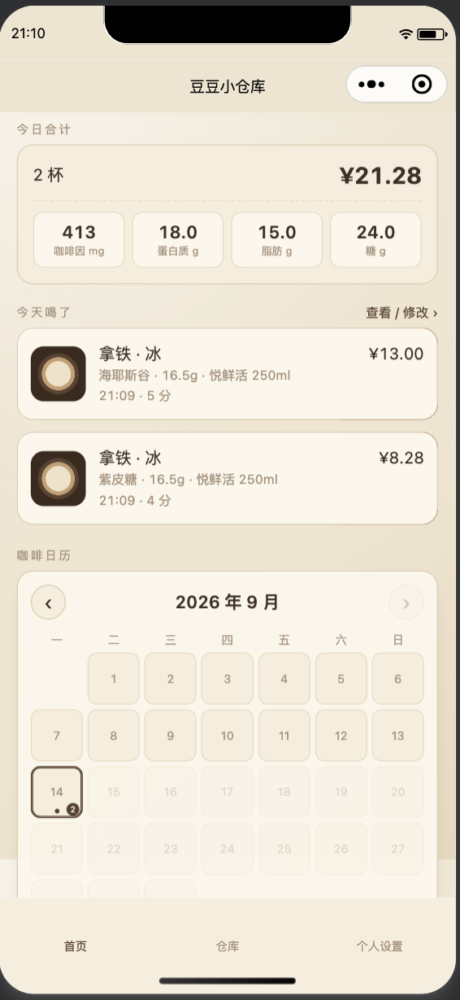
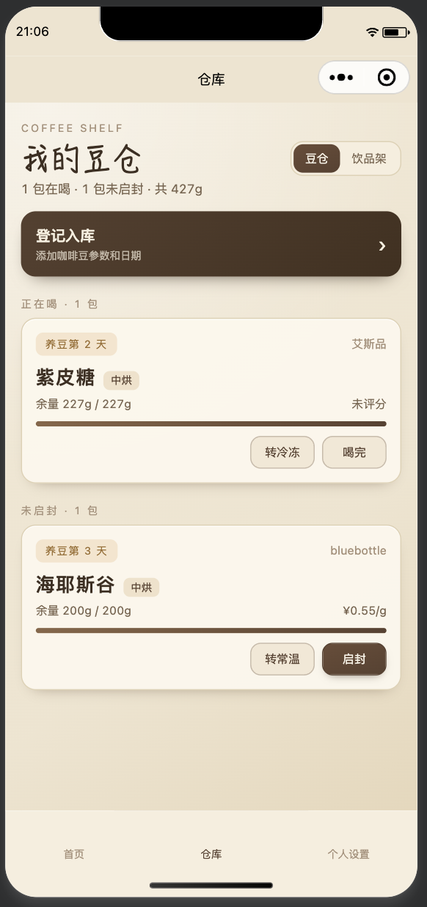

一个只给自己用的咖啡记账本 —— 记录每天喝的咖啡，管理咖啡豆和辅料库存，自动算成本和营养。原生微信小程序，数据存在本地，不需要服务器。

记一杯
选豆子 · 算价格
今日合计 · 日历
豆仓库存选品类、选温度（热/常温/冰）、选豆子、选辅料，自动算钱和营养，一键保存。
咖啡豆和牛奶/椰子水都有余量，喝一杯扣一杯，删记录会自动归还。
每天/每周/每月喝了多少、花了多少钱，日历一目了然，点哪天都能查看和改。
| 功能 | 说明 |
|---|---|
| 咖啡品类管理 | 长按拖拽排序，前 3 个直接展示在首页，其余收进"其他" |
| 默认消耗量 | 豆子每次用多少克、牛奶/椰子水每次用多少毫升 |
| 豆子清单 | 只看喝过的豆子，含杯数和评分 |
| 数据统计 | 周/月/年三种视角，花费、豆子消耗、日均用量，每日明细可跳转查看/修改 |
| 初始化数据 | 支持"只清空记录"（物料自动归还）或"全部初始化"（恢复出厂设置） |
TypeScript + WXML + WXSS，微信开发者工具直接导入即可运行，无需额外构建工具链。
数据全部存在 wx.setStorageSync 本地缓存里，不需要服务器和后端配置。
storage.ts 管数据读写，logs.ts 管记录增删改和库存归还，calculations.ts 管所有计算。